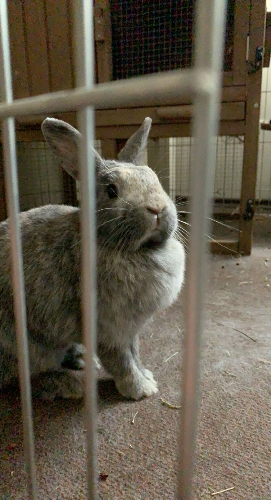
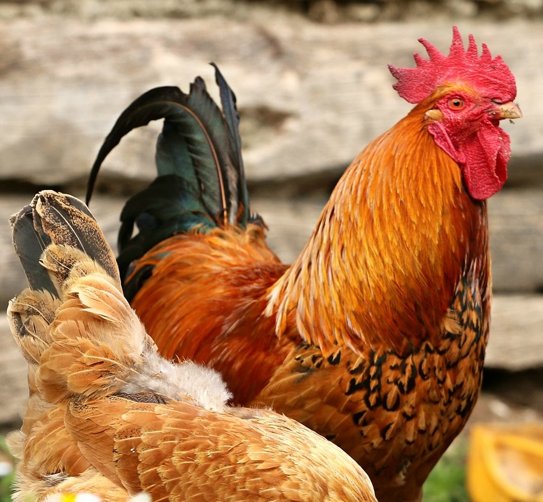
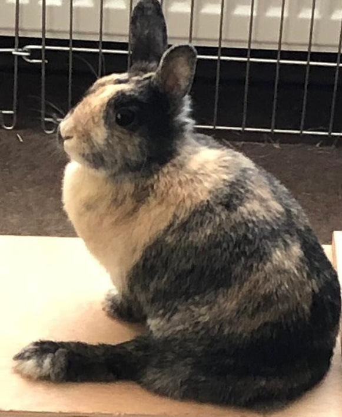

<!DOCTYPE html>
<html>

<head>
    <link rel="stylesheet" href="style.css" type="text/css">
    <link rel="icon" href="Bilder/logo-removebg-preview.png">
    <title>Kleintierzuchtverein Kuschelfreunde E.V.</title>
    <meta charset="utf-8">
    </meta>
</head>

</html>

<body>
    <div class="layout_1">
        <header class="header">
            <div class="container">
                <a href="home_de.html">
                    <div class="logo">
                        
                        <div class="logo_title">
                            <div class=logo_name>Kleintierzuchtverein</div>
                            <div class=logo_text>Kuschelfreunde E.V.</div>
                        </div>
                    </div>
                </a>
                <div class="spacer"></div>
                <div class="menu">
                    <a class="top_menu_item " href="home_de.html">
                        Über uns
                    </a>
                    <a class="top_menu_item top_menu_item_active" href="#">
                        Unsere Tiere
                    </a>
                    <a class="top_menu_item " href="geschichte_de.html">
                        Geschichte
                    </a>
                    <a class="top_menu_item " href="events_de.html">
                        Events
                    </a>
                </div>
            </div>
        </header>
        <section>
            <div class="spacer2"></div>
            <div class="steckbrief steckbrief_jolie">
                
                <div class="steckbrief_text_bereich">
                    <h3 class="beitrag_wort">Name:</h3>
                    <p class="steckbrief_beitrag_wert">Jolie</p>
                    <h3 class="beitrag_wort">Tierart:</h3>
                    <p class="steckbrief_beitrag_wert">Zwergkaninchen</p>
                    <h3 class="beitrag_wort">Alter:</h3>
                    <p class="steckbrief_beitrag_wert">6</p>
                    <h3 class="beitrag_wort">Gewicht:</h3>
                    <p class="steckbrief_beitrag_wert">2 kg</p>
                    <h3 class="beitrag_wort">Lieblingsessen:</h3>
                    <p class="steckbrief_beitrag_wert">Walnüsse</p>
                </div>
                <div class="steckbrief_beschreibung">
                    <h3 class="beitrag_wort">Beschreibung:</h3>
                    <p class="steckbrief_beitrag_wert">Zwergkaninchen Dame Jolie ist wie der Name verlauten lässt eine
                        der hübschesten Zwergkaninchen Deutschlands. Ausgezeichnet durch viele Preise, ist sie auch sehr
                        temperament und bedarf viel Aufmerksamkeit. Belohen lässt sich die feine Dame am Liebsten mit
                        Walnüssen. Züchterin Paulina Phillips rät jedochd dazu Kanninchen nicht zu viel mit Nüssen zu
                        Füttern. Durch ihren hohen Fettgehalt sind sie nur schwer zu verdauen und nehmen das
                        Settigungsgefühl des Tieres. Als kleines Leckerli sind sie jedoch durchaus angebracht. </p>
                </div>
            </div>
            <div class="steckbrief steckbrief_garfield">
                <div class="steckbrief_text_bereich">
                    <h3 class="beitrag_wort">Name:</h3>
                    <p class="steckbrief_beitrag_wert">Garfield</p>
                    <h3 class="beitrag_wort">Tierart:</h3>
                    <p class="steckbrief_beitrag_wert">American Wirehair</p>
                    <h3 class="beitrag_wort">Alter:</h3>
                    <p class="steckbrief_beitrag_wert">4</p>
                    <h3 class="beitrag_wort">Gewicht:</h3>
                    <p class="steckbrief_beitrag_wert">4,5 kg</p>
                    <h3 class="beitrag_wort">Lieblingsessen:</h3>
                    <p class="steckbrief_beitrag_wert">Lasangne</p>
                </div>
                <div class="steckbrief_beschreibung  steckbrief_beschreibung_garfield">
                    <h3 class="beitrag_wort">Beschreibung:</h3>
                    <p class="steckbrief_beitrag_wert">Nicht nur wegen seiner Vorlieb zu Lasangn wurde Garfields Name an
                        die Comicfigur angelehnt. Er macht nicht viel außerdem ganzen Tag herum zu liegen und nichts zu
                        tuen. Jonathan Q. Arbuckle, sein Herchen meint, dass Garfield die Faulste Katze sei, die er je
                        Gezüchtet hat. Garfields bester Freund ist Odie ein Hund, den er jedoch diemeitse Zeit nur
                        ärgert.</p>
                </div>
                
            </div>
            <div class="steckbrief steckbrief_jolie">
                
                <div class="steckbrief_text_bereich">
                    <h3 class="beitrag_wort">Name:</h3>
                    <p class="steckbrief_beitrag_wert">Friedrich</p>
                    <h3 class="beitrag_wort">Tierart:</h3>
                    <p class="steckbrief_beitrag_wert">Hahn</p>
                    <h3 class="beitrag_wort">Alter:</h3>
                    <p class="steckbrief_beitrag_wert">3</p>
                    <h3 class="beitrag_wort">Gewicht:</h3>
                    <p class="steckbrief_beitrag_wert">1,2 kg</p>
                    <h3 class="beitrag_wort">Lieblingsessen:</h3>
                    <p class="steckbrief_beitrag_wert">Sonnenblumenkerne</p>
                </div>
                <div class="steckbrief_beschreibung steckbrief_beschreibung_friedrich">
                    <h3 class="beitrag_wort">Beschreibung:</h3>
                    <p class="steckbrief_beitrag_wert">Friedrich ist der typische Hahn im Korb. Aufrecht und stolz
                        bewacht er den ganzen Tag den Hof von Besitzer Helmut Schulz, so wie seine Hennen. Pünktlich um
                        6
                        Uhr verkündet Freidrich jeden Tag den Tagesanbruch. Tempramentvoll wird er, wenn man an die Eier
                        seiner Gattinnen geht. Am liebsten wird er mit Sonnenblumenkernen gefüttert.</p>
                </div>
            </div>
            <div class="steckbrief steckbrief_garfield">
                <div class="steckbrief_text_bereich">
                    <h3 class="beitrag_wort">Name:</h3>
                    <p class="steckbrief_beitrag_wert">Lou</p>
                    <h3 class="beitrag_wort">Tierart:</h3>
                    <p class="steckbrief_beitrag_wert">Zwergkanninchen</p>
                    <h3 class="beitrag_wort">Alter:</h3>
                    <p class="steckbrief_beitrag_wert">6</p>
                    <h3 class="beitrag_wort">Gewicht:</h3>
                    <p class="steckbrief_beitrag_wert">1.5 kg</p>
                    <h3 class="beitrag_wort">Lieblingsessen:</h3>
                    <p class="steckbrief_beitrag_wert">Heu</p>
                </div>
                <div class="steckbrief_beschreibung  steckbrief_beschreibung_lou">
                    <h3 class="beitrag_wort">Beschreibung:</h3>
                    <p class="steckbrief_beitrag_wert">Zierlicher als die große Schwester Jolie ist Lou vom Charakter
                        her sehr zurückhaltend. Sie ist mit wenig zufrieden, so mag sie im gegensatz zu ihrer Schwester
                        herkömliches Heu. Da sie sich auf einer ihrer Hüpftouren eine Sehne gerissen hat, die sich nicht
                        mehr operativ herstellen lässt, steht auf dem Bild das eine Bein so ab. Dies hindert die tapfere
                        Lou jedoch nicht daran durch den Käfig, den sie ihr eigen nennen darf, zu hoppeln. </p>
                </div>
                
            </div>
        </section>
        <section class="languages">
            <div class="container">
                <a class="menu_item selected_language" onclick="button_toggle()">Deutsch</a>
                <a href='unsereTiere_lI.html' class="menu_item" onclick="button_toggle()">Lorem
                    Ipsum</a>
            </div>
        </section>
        <footer class="footer">
            <div class="container">
                <a href="home_de.html">
                    <div class="logo_footer">
                        
                        <div class="logo_title_footer">
                            <div class=logo_name_footer>Kleintierzuchtverein</div>
                            <div class=logo_text_footer>Kuschelfreunde E.V.</div>
                        </div>
                    </div>
                </a>
                <div class="spacer"></div>
                <button class="language_switcher" onclick="button_toggle()">
                    
                    
                </button>
            </div>
        </footer>
    </div>
    <script src="language_button.js"></script>
</body>